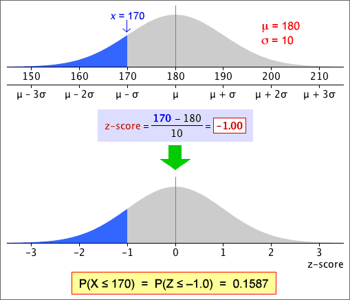

| standardised value, |
|---|
Distribution of z-scores
Calculating a z-score from a value, x, is called standardising it.
| standardised value, |
|---|
If X has a normal distribution, then Z has a standard normal distribution with mean µ = 0 and standard deviation σ = 1.
Probabilities for the standard normal distribution
After translating a probability about X into one about a z-score, it is easier to evaluate it.

Areas under the standard normal curve can be evaluated in Excel and most statistical programs. Statistical tables can also be used (see later).